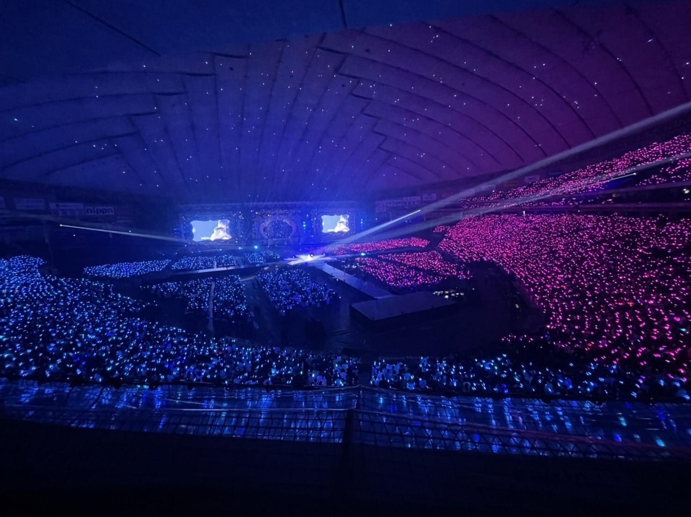
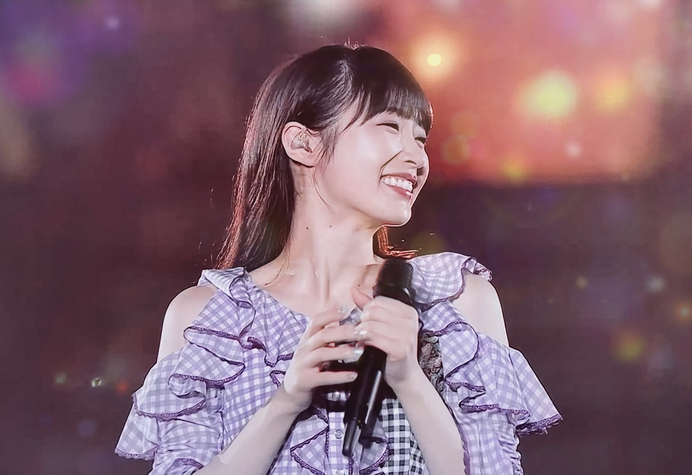
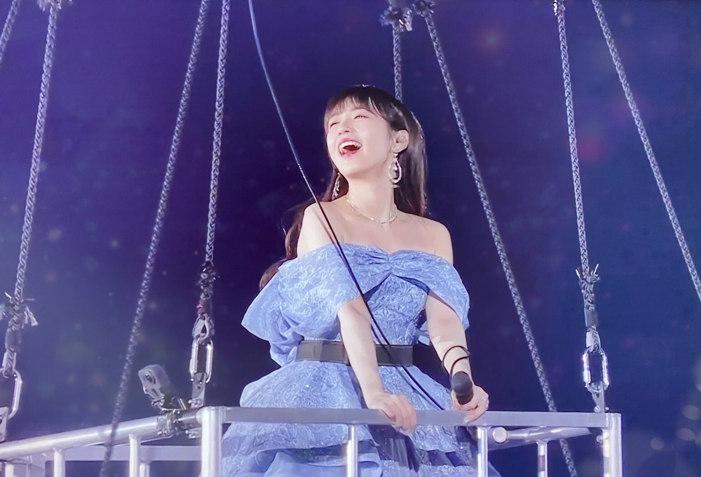

2021/1122Mon最後のブログです



こんなに幸せそうな自分見たことがありません...みんな本当にありがとう！
今日は抜け殻でした！
抜け殻すら楽しめる自分がいました！！！
2021.11.22
2021/11/22 23:12
コメント(3239)
今まで本当にお疲れ様でした！
卒業セレモニーでのスピーチからもかずみんの人柄の良さを感じたよ。
『泣いたっていいじゃないか？』の最後にまあやが頭を触るところ(フリ)で思わず涙が出てきたよ。
これからの活躍にも期待しています！
本当にありがとう！！！
卒業セレモニーでのスピーチからもかずみんの人柄の良さを感じたよ。
『泣いたっていいじゃないか？』の最後にまあやが頭を触るところ(フリ)で思わず涙が出てきたよ。
これからの活躍にも期待しています！
本当にありがとう！！！
かずみん、楽しい時間をありがとう
かずみん十年お疲れ様でした、ありがとう！！
かずみんが好きです。10個以上歳が離れてるけど関係なく好きです。これからもいつまでも応援してます！！
最高のライフでした！
本当にかずみん綺麗でした！
現地で見送れたこと本当嬉しく思います。
かずみんの今後がさらに楽しい日々になりますように
本当にかずみん綺麗でした！
現地で見送れたこと本当嬉しく思います。
かずみんの今後がさらに楽しい日々になりますように
こんばんは、高山さん。
そうですね、個人的な話なのですけど、僕は2016年8月8日から乃木坂工事中をきっかけに乃木坂46のファンとなりました。
それまでは乃木坂46というグループのこと、何人か知っているメンバーがいる、それぐらいしかわからなかったのです。
その僕が乃木坂46のファンとなる前から知っているメンバーの中に高山さんはいました。
2013年の3月、ダウンタウンDXに出演した高山さんを見て、かわいくて、おもしろい子だなと思って気になってすぐ高山さんのことネットで検索して調べたように思います。
僕の乃木坂46の最初の推しメンは高山さんだったのかもしれない。
だけど、自分で決めた予算とかあるから、乃木坂46 真夏の全国ツアー2021 東京ドーム公演の配信は視聴するのは厳しいな。
そうですね、2021年11月21日、そんなことを考えながら買い物をしていました。
そうですね、個人的な話なのですけど、僕はなにかを決めるのが遅い、決心のきっかけが時間切れ、そんなこともよくあるのです。
そうですね、むしろ時間切れでも今ならまだロスタイムのようなものかと考えてなにかを決めることもあります。
そうですね、2021年11月21日の夕方、帰宅して、伊藤かりんさんのTweetを見ました。
そして、高山さん、今日で乃木坂46から卒業なんだよな。
そう考えて、その後は、僕の衝動、のように乃木坂46 真夏の全国ツアー2021 東京ドーム公演のチケットを買いました！
そうですね、個人的な話なのですけど、後になって、あの時ああすればよかった、あの選択肢を選んでいたら、そう思うことがよくあります。
リアルタイムで、これでよかった、そう思えるぐらい、乃木坂46 真夏の全国ツアー2021東京ドーム公演、素敵なライブだったなと思います。
乃木坂46 真夏の全国ツアー2021 東京ドーム公演、とくに記憶に残っているのは、乃木坂46メンバー、それぞれが歌ったきっかけだったなと思います。
そして、やっぱり、高山さんの優しい笑顔ですね！
2019年4月15日の高山さんのブログにこうあります。
「乃木坂46が好き」
そう言ってくれる人の大半は
自分ではない誰かを応援している
たしかにみんながみんな高山さん推しではないかもしれません。
しかし、自分の推しているメンバーではなくても、乃木坂46のメンバーが活躍しているというのは嬉しいと思うファンの方、多いのではないかなと個人的に思うのです。
例えばトラペジウムが多くの人に読まれているとか！
そうですね、以前僕は高山さんがUVERworldさんのことが好きということで、UVERworldさんの曲を聴いてみたことがあります。
そうですね、UVERworldのTAKUYA∞さんが君に叱られたを歌うインスタグラムのストーリーズを視聴しました。
そうですね、君に叱られたが普段聴いてる君に叱られたとはまた別の曲のようにも聴こえてとてもカッコよかったなと思います。
そうですね、個人的な話なのですけど、僕は高山さんと似ているなと思うところが多いように思います。
僕も高山さんも水瓶座で、そして、この共通点は高山さんしか知らないなと思うのですけど、肘をこする癖が僕もあるのです（笑）
そうですね、ここからは本当に個人的な考察ですけど、インスタグラムのストーリーズでUVERworldのTAKUYA∞さんが君に叱られたを歌う前に肘をタッチしていましたけど、あれはもしかしたら、高山さんへのメッセージだったのかなと、そうですね、本当に個人的な見解ですけどね、少し思いました。
今まで乃木坂46を支えてきてくださってありがとうございました！
僕はこれからも、ささやかかもしれないですけど、高山さんのこと、そして乃木坂46のこと、自分にできることででかもしれないですけどね、応援していきたいなと、今は思います。
どうか健康には気を付けて楽しく日々をお過ごしください！
高山さんのこれからに幸あれ！
そうですね、個人的な話なのですけど、僕は2016年8月8日から乃木坂工事中をきっかけに乃木坂46のファンとなりました。
それまでは乃木坂46というグループのこと、何人か知っているメンバーがいる、それぐらいしかわからなかったのです。
その僕が乃木坂46のファンとなる前から知っているメンバーの中に高山さんはいました。
2013年の3月、ダウンタウンDXに出演した高山さんを見て、かわいくて、おもしろい子だなと思って気になってすぐ高山さんのことネットで検索して調べたように思います。
僕の乃木坂46の最初の推しメンは高山さんだったのかもしれない。
だけど、自分で決めた予算とかあるから、乃木坂46 真夏の全国ツアー2021 東京ドーム公演の配信は視聴するのは厳しいな。
そうですね、2021年11月21日、そんなことを考えながら買い物をしていました。
そうですね、個人的な話なのですけど、僕はなにかを決めるのが遅い、決心のきっかけが時間切れ、そんなこともよくあるのです。
そうですね、むしろ時間切れでも今ならまだロスタイムのようなものかと考えてなにかを決めることもあります。
そうですね、2021年11月21日の夕方、帰宅して、伊藤かりんさんのTweetを見ました。
そして、高山さん、今日で乃木坂46から卒業なんだよな。
そう考えて、その後は、僕の衝動、のように乃木坂46 真夏の全国ツアー2021 東京ドーム公演のチケットを買いました！
そうですね、個人的な話なのですけど、後になって、あの時ああすればよかった、あの選択肢を選んでいたら、そう思うことがよくあります。
リアルタイムで、これでよかった、そう思えるぐらい、乃木坂46 真夏の全国ツアー2021東京ドーム公演、素敵なライブだったなと思います。
乃木坂46 真夏の全国ツアー2021 東京ドーム公演、とくに記憶に残っているのは、乃木坂46メンバー、それぞれが歌ったきっかけだったなと思います。
そして、やっぱり、高山さんの優しい笑顔ですね！
2019年4月15日の高山さんのブログにこうあります。
「乃木坂46が好き」
そう言ってくれる人の大半は
自分ではない誰かを応援している
たしかにみんながみんな高山さん推しではないかもしれません。
しかし、自分の推しているメンバーではなくても、乃木坂46のメンバーが活躍しているというのは嬉しいと思うファンの方、多いのではないかなと個人的に思うのです。
例えばトラペジウムが多くの人に読まれているとか！
そうですね、以前僕は高山さんがUVERworldさんのことが好きということで、UVERworldさんの曲を聴いてみたことがあります。
そうですね、UVERworldのTAKUYA∞さんが君に叱られたを歌うインスタグラムのストーリーズを視聴しました。
そうですね、君に叱られたが普段聴いてる君に叱られたとはまた別の曲のようにも聴こえてとてもカッコよかったなと思います。
そうですね、個人的な話なのですけど、僕は高山さんと似ているなと思うところが多いように思います。
僕も高山さんも水瓶座で、そして、この共通点は高山さんしか知らないなと思うのですけど、肘をこする癖が僕もあるのです（笑）
そうですね、ここからは本当に個人的な考察ですけど、インスタグラムのストーリーズでUVERworldのTAKUYA∞さんが君に叱られたを歌う前に肘をタッチしていましたけど、あれはもしかしたら、高山さんへのメッセージだったのかなと、そうですね、本当に個人的な見解ですけどね、少し思いました。
今まで乃木坂46を支えてきてくださってありがとうございました！
僕はこれからも、ささやかかもしれないですけど、高山さんのこと、そして乃木坂46のこと、自分にできることででかもしれないですけどね、応援していきたいなと、今は思います。
どうか健康には気を付けて楽しく日々をお過ごしください！
高山さんのこれからに幸あれ！
ご卒業、おめでとうございます。
そして、お疲れ様でした。
乃木坂というグループを知りたいと思ったのは、あなたが出演されていた深夜のバラエティー番組からでした。
あなたの事やグループの事を知っていくうちに、回りを笑顔にするあなたの人柄や優しさにいつもテレビから、元気をいただいてました。
乃木坂に入ってくれて、有難うございました。
卒業は寂しいですが、これからもかずみんらしく、飾らず、笑顔を届けてくれたら幸いです。応援してます。
そして、お疲れ様でした。
乃木坂というグループを知りたいと思ったのは、あなたが出演されていた深夜のバラエティー番組からでした。
あなたの事やグループの事を知っていくうちに、回りを笑顔にするあなたの人柄や優しさにいつもテレビから、元気をいただいてました。
乃木坂に入ってくれて、有難うございました。
卒業は寂しいですが、これからもかずみんらしく、飾らず、笑顔を届けてくれたら幸いです。応援してます。
乃木坂に入ってくれて本当にありがとう これからも応援し続けます
あきるまでやれば大丈夫だよ。
かずみん10年間お疲れ様！！ありがとう！！大好き！
ありがとう。
これからも応援してます。
これからも応援してます。
お疲れ様でした。
たくさんたくさんありがとう
卒業後も幸せを祈っています
たくさんたくさんありがとう
卒業後も幸せを祈っています
かずみん、卒業おめでとうです。
個人的には握手会ってどんなんだろう、って気持ちで行った何空の握手会からそのまま推すと決めて7年程…。
思い返したらずっとずっと夢のような楽しい時間でした。
今度～で会えるからからがんばろうって何度も希望をくれました。感謝しかありません。
21日は配信で、でもなんとか20日現地で、いつもの以上の素敵な笑顔を観られて最後まで幸せな時間を過ごせました。
高山病は治らないので、これからもずっと応援していきます。
できるだけたくさん、かずみんに幸せな時間が訪れますように。
個人的には握手会ってどんなんだろう、って気持ちで行った何空の握手会からそのまま推すと決めて7年程…。
思い返したらずっとずっと夢のような楽しい時間でした。
今度～で会えるからからがんばろうって何度も希望をくれました。感謝しかありません。
21日は配信で、でもなんとか20日現地で、いつもの以上の素敵な笑顔を観られて最後まで幸せな時間を過ごせました。
高山病は治らないので、これからもずっと応援していきます。
できるだけたくさん、かずみんに幸せな時間が訪れますように。
かずみん、１０年間お疲れ様でした。
ファンになってまだ４年くらいですが、乃木坂、そしてかずみんに会えて幸せです。
私の人生で最高のアイドル、高山一実をこれからも応援します。がんばって下さい！
ファンになってまだ４年くらいですが、乃木坂、そしてかずみんに会えて幸せです。
私の人生で最高のアイドル、高山一実をこれからも応援します。がんばって下さい！
高山一実さん、おはようございます。
あなたが乃木坂46を卒業されてしばしの時が流れました。寂しさを胸に懐きつつ、これまでの感謝を綴ってあなたのブログへの最後のコメントを締めくくろうと思います。
まずは東京ドームでのライブ二日間、お疲れさまでした。四年ぶりに帰ってきた大舞台。ずっと応援してきたグループがこうして大きなステージで輝く姿を再び観ることができて僕らも感無量です。幸せな時間をありがとうございました。
二日目千秋楽は今年の全国ツアーの集大成であるとともに、あなたのラストステージでもありました。これまでのたくさんの思い出を顧みつつ、水色のドレスを身にまとい語り歌い舞うあなたの姿をしっかり目に焼きつけました。
あなたは僕らファンに向けて「幸せを作る天才」とおっしゃっていただきましたが、あなたこそ幸せを生み出す天使でした。抱えきれないほどのたくさんの幸福をあなたからいただいたことに感謝しています。
思えば乃木坂46にはいつでもあなたの笑顔がありました。メンバーはもちろん周りの人全てから愛され、笑顔の輪を大きく広げてきたあなたとのたくさんの思い出はいつまでも忘れません。10年間本当にお疲れさまでした。そしてありがとうございました。
いつまでも名残は尽きませんが、そろそろお別れのご挨拶をいたしましょう。これからもあなたの活躍を祈るとともに、ずっとあなたを応援しています。
お別れのご挨拶は、いつもと同じ言葉で締めくくりたいと思います。きっとまたお目にかかりましょう。
さらばだ、また会おう！（気球に乗って去りぬ〜 涙）
あなたが乃木坂46を卒業されてしばしの時が流れました。寂しさを胸に懐きつつ、これまでの感謝を綴ってあなたのブログへの最後のコメントを締めくくろうと思います。
まずは東京ドームでのライブ二日間、お疲れさまでした。四年ぶりに帰ってきた大舞台。ずっと応援してきたグループがこうして大きなステージで輝く姿を再び観ることができて僕らも感無量です。幸せな時間をありがとうございました。
二日目千秋楽は今年の全国ツアーの集大成であるとともに、あなたのラストステージでもありました。これまでのたくさんの思い出を顧みつつ、水色のドレスを身にまとい語り歌い舞うあなたの姿をしっかり目に焼きつけました。
あなたは僕らファンに向けて「幸せを作る天才」とおっしゃっていただきましたが、あなたこそ幸せを生み出す天使でした。抱えきれないほどのたくさんの幸福をあなたからいただいたことに感謝しています。
思えば乃木坂46にはいつでもあなたの笑顔がありました。メンバーはもちろん周りの人全てから愛され、笑顔の輪を大きく広げてきたあなたとのたくさんの思い出はいつまでも忘れません。10年間本当にお疲れさまでした。そしてありがとうございました。
いつまでも名残は尽きませんが、そろそろお別れのご挨拶をいたしましょう。これからもあなたの活躍を祈るとともに、ずっとあなたを応援しています。
お別れのご挨拶は、いつもと同じ言葉で締めくくりたいと思います。きっとまたお目にかかりましょう。
さらばだ、また会おう！（気球に乗って去りぬ〜 涙）
ご卒業おめでとうございます
乃木坂４６に入ってくれてありがとう！
たくさん笑わせてくれてありがとう！
たくさん癒やしてくれてありがとう！
これからの明るい未来も、応援しています！！
乃木坂４６に入ってくれてありがとう！
たくさん笑わせてくれてありがとう！
たくさん癒やしてくれてありがとう！
これからの明るい未来も、応援しています！！
ありがとうございました
またヨロシクね
またヨロシクね
遅ればせながらドーム公演二日間、そして何より十年のアイドル生活、本当にお疲れ様でした。
思えばご卒業を発表されてからの各種媒体でのご卒業、これまでのアイドル人生にまつわるインタビューやご出演、発信は恐らく全て拝見、拝読、拝聴させて頂いたと思うのですが、そのいずれもに心の底からはっとさせられる言葉や思いがあって、高山さんのこの十年間の充実、そして何より高山さんという人の心根の美しいことを改めて何度も何度も実感しておりました。
それらに浸るたびに、「君に叱られた」のパフォーマンスを観る度に、「最後のtight hug」のパフォーマンスにそのお姿を見つけられない度に、ああ、高山さんがいなくなるの嫌だな、と思っていました。
そして卒業セレモニーでの高山さんのお姿を拝見して……、やっぱりいなくなるの嫌だなって思ってしまいました笑
いつも綺麗で、それも年を重ねるほどに飛躍的に綺麗になっていったけれど、最後のセレモニーの高山さんは紛れもなく十年で最も美しかったです。
最後の時間に最も綺麗で、可愛くて、素敵な姿を残す。
きっとそれ以上に素晴らしいアイドルの在り方ってない気がします。
もしタイムマシンが使えるならば、子供のころにアイドルに目を輝かせていた、道重さんの握手レーンに並んでいた、様々なグループのオーディション落選の末に乃木坂46の最終審査に房総から向かう真っ最中の少女のもとにタブレットを見せて、あなたは東京ドームの真ん中でこんな美しいアイドルになっているよと教えてあげたくなりました！
ご卒業おめでとうございます。
これからのご活躍も期待しております！
……、出演スケジュール確認したいので早めに公式サイト的なもの開設してくださいっ！笑
思えばご卒業を発表されてからの各種媒体でのご卒業、これまでのアイドル人生にまつわるインタビューやご出演、発信は恐らく全て拝見、拝読、拝聴させて頂いたと思うのですが、そのいずれもに心の底からはっとさせられる言葉や思いがあって、高山さんのこの十年間の充実、そして何より高山さんという人の心根の美しいことを改めて何度も何度も実感しておりました。
それらに浸るたびに、「君に叱られた」のパフォーマンスを観る度に、「最後のtight hug」のパフォーマンスにそのお姿を見つけられない度に、ああ、高山さんがいなくなるの嫌だな、と思っていました。
そして卒業セレモニーでの高山さんのお姿を拝見して……、やっぱりいなくなるの嫌だなって思ってしまいました笑
いつも綺麗で、それも年を重ねるほどに飛躍的に綺麗になっていったけれど、最後のセレモニーの高山さんは紛れもなく十年で最も美しかったです。
最後の時間に最も綺麗で、可愛くて、素敵な姿を残す。
きっとそれ以上に素晴らしいアイドルの在り方ってない気がします。
もしタイムマシンが使えるならば、子供のころにアイドルに目を輝かせていた、道重さんの握手レーンに並んでいた、様々なグループのオーディション落選の末に乃木坂46の最終審査に房総から向かう真っ最中の少女のもとにタブレットを見せて、あなたは東京ドームの真ん中でこんな美しいアイドルになっているよと教えてあげたくなりました！
ご卒業おめでとうございます。
これからのご活躍も期待しております！
……、出演スケジュール確認したいので早めに公式サイト的なもの開設してくださいっ！笑
かずみん、おはようございます～♪
先日はモバメをありがとうございます◎
かずみんからの最後のモバメ、、
優しい言葉に泣いちゃいました。。
今までたくさんの楽しいメールに
元気と活力、そして癒しを頂き、
本当にありがとうございました！！
そして、
755も最後にクローズされましたね、涙
このブログも近々クローズされるですね。。
日々の日課のようにコメントをしてきたけど、
それも終わりと思うと寂しいです。。
これからはインスタのコメントなどで
かずみんの活躍の感想などを伝えていきますね～
ではでは、今日もかずみんが
元気いっぱい！幸せいっぱい！！
楽しく1日を過ごせますように～♪
先日はモバメをありがとうございます◎
かずみんからの最後のモバメ、、
優しい言葉に泣いちゃいました。。
今までたくさんの楽しいメールに
元気と活力、そして癒しを頂き、
本当にありがとうございました！！
そして、
755も最後にクローズされましたね、涙
このブログも近々クローズされるですね。。
日々の日課のようにコメントをしてきたけど、
それも終わりと思うと寂しいです。。
これからはインスタのコメントなどで
かずみんの活躍の感想などを伝えていきますね～
ではでは、今日もかずみんが
元気いっぱい！幸せいっぱい！！
楽しく1日を過ごせますように～♪
かずみん、本当にありがとうございました！！！今までもこれからもずっと大好きです！
笑顔の源になってくれてありがとう⸜♡⸝
10年間お疲れ様でした。
卒業おめでとう！
笑顔の源になってくれてありがとう⸜♡⸝
10年間お疲れ様でした。
卒業おめでとう！
私はあなたと握手会が出来たことを忘れません。ありがとう。こんなにも心が綺麗な人がいるのかと思いました☺︎(あすかちゃんが言ってたけど、悪い人に引っかからないようにね笑)
⊿よんくん⊿
⊿よんくん⊿
ご無沙汰しております。
そして、ご卒業おめでとうございます。
かずみんに夢中になっていたあの頃が、私にとって最高の時でした。
とても感謝しております。
応援できて光栄でした。
くれぐれもお身体を大切にしてください！
似顔絵のり
そして、ご卒業おめでとうございます。
かずみんに夢中になっていたあの頃が、私にとって最高の時でした。
とても感謝しております。
応援できて光栄でした。
くれぐれもお身体を大切にしてください！
似顔絵のり
かずみん！
10年間ホンマにお疲れ様～！
かずみんといえば！衝撃の体力！
ヒット祈願をはじめ、工事中では予想外の体力を発揮しタイキックもチーンとなってたねw
それから、よだぽん！
要所要所可愛過ぎて、食べられる！？
食えるな～。色んな意味で。
かずみんはこれからの人生にどんな色になるんだろう？それは君次第～♪
それでは、ホンマにホンマにありがとう！
10年間ホンマにお疲れ様～！
かずみんといえば！衝撃の体力！
ヒット祈願をはじめ、工事中では予想外の体力を発揮しタイキックもチーンとなってたねw
それから、よだぽん！
要所要所可愛過ぎて、食べられる！？
食えるな～。色んな意味で。
かずみんはこれからの人生にどんな色になるんだろう？それは君次第～♪
それでは、ホンマにホンマにありがとう！
かずみん卒業おめでとう
きっとかずみんは全てのコメントを読んでくれると思うから遅くなりましたがコメント残します。
卒コンお疲れ様でした。１日目しか参加出来ず２日目は配信で見たけど涙が止まりませんでした。乃木坂工事中の最後の企画もとても良かったです
落ち着いたら是非小説を書いてください。
お渡し会開いてくれたら絶対に駆けつけて今までの感謝の気持ちを伝えますからね。
先ずはお疲れ様でした。
これからも応援します
きっとかずみんは全てのコメントを読んでくれると思うから遅くなりましたがコメント残します。
卒コンお疲れ様でした。１日目しか参加出来ず２日目は配信で見たけど涙が止まりませんでした。乃木坂工事中の最後の企画もとても良かったです
落ち着いたら是非小説を書いてください。
お渡し会開いてくれたら絶対に駆けつけて今までの感謝の気持ちを伝えますからね。
先ずはお疲れ様でした。
これからも応援します
本当に本当に本当に！！！
ありがとーーー！！、！！！
ありがとーーー！！、！！！
かずみん、10年間お疲れさまでした。21日、初めて乃木坂のライブに行きました。かずみんを照らす光の一員になれたことを誇らしく思います。
卒業を発表してから、「寂しい！」と何度も言っていたかずみんを見て、同じ気持ちでいるんだ、寂しがってもいいんだと、安心するような、寂しいけど嬉しいような気持ちになりました。
「幸せ」と言葉にして何度も伝えてくれてありがとう。かずみんに出会えて、応援することができて本当に幸せです。アイドルになってくれて、乃木坂46になってくれて、出会わせてくれてありがとう。
これからもどうかよろしくお願いします。また会えるよね！大好きです。
ご卒業おめでとうございます
卒業を発表してから、「寂しい！」と何度も言っていたかずみんを見て、同じ気持ちでいるんだ、寂しがってもいいんだと、安心するような、寂しいけど嬉しいような気持ちになりました。
「幸せ」と言葉にして何度も伝えてくれてありがとう。かずみんに出会えて、応援することができて本当に幸せです。アイドルになってくれて、乃木坂46になってくれて、出会わせてくれてありがとう。
これからもどうかよろしくお願いします。また会えるよね！大好きです。
ご卒業おめでとうございます
かずみん10年間ありがとう！大好きです。
10年間、本当にお疲れ様でした。
かずみんがいたから、こんなにも乃木坂を好きになれたんだと思います。
かずみんがいたから、他のメンバーも好きになりました。
本当に、ありがとうございました‼️
今後の活躍、祈ってます‼️
できれば、小説もすこしづつでいいから、出してほしいな!
かずみんがいたから、こんなにも乃木坂を好きになれたんだと思います。
かずみんがいたから、他のメンバーも好きになりました。
本当に、ありがとうございました‼️
今後の活躍、祈ってます‼️
できれば、小説もすこしづつでいいから、出してほしいな!
かずみんありがとう、これからのかずみんの幸せを願っています。
ありがとー。
10年、お疲れ様。
卒業は寂しいけど、仕方のない事なのかな。
これからもお仕事頑張ってくださいね。
今まで楽しませてくれて、ありがとう。
卒業は寂しいけど、仕方のない事なのかな。
これからもお仕事頑張ってくださいね。
今まで楽しませてくれて、ありがとう。
そろそろライブの疲れは取れた頃かな？
代わって卒業の実感が湧いてくる頃かな？
かずみんがＴＶとかで活躍している間は未だ当分かずみんロスにはならないと思います。
息の長い活動をお願いします。
代わって卒業の実感が湧いてくる頃かな？
かずみんがＴＶとかで活躍している間は未だ当分かずみんロスにはならないと思います。
息の長い活動をお願いします。
かずみん こんにちは(⌒∇⌒)ノ"
こんにちは(⌒∇⌒)ノ"
『かずみん、ごめん。。』
俺『しげみん』は、先日の《東京ドーム》での『かずみん卒業コンサート』で終始、、、、号泣していた と話したじゃない？
と話したじゃない？
その時を最後に俺『しげみん』は《かずみんショック》で、なにもかもがイヤになって心が病んでしまって、、、、二日か、三日ぐらい？コメントが滞っていてごめんなさい。。
いつまでも、、、、『くよくよ』していても、どうにもならないことだから、少しずつ前向きに考えて元の俺『しげみん』に戻っていくつもりだよ。。
 ポジピース
ポジピース
『かずみん、ごめん。。』
俺『しげみん』は、先日の《東京ドーム》での『かずみん卒業コンサート』で終始、、、、号泣していた
その時を最後に俺『しげみん』は《かずみんショック》で、なにもかもがイヤになって心が病んでしまって、、、、二日か、三日ぐらい？コメントが滞っていてごめんなさい。。
いつまでも、、、、『くよくよ』していても、どうにもならないことだから、少しずつ前向きに考えて元の俺『しげみん』に戻っていくつもりだよ。。
かずみん卒業おめでとう！
最後のライブ最高でした！
かずみんめっちゃ綺麗だった！
またどこかで会えますように！
最後のライブ最高でした！
かずみんめっちゃ綺麗だった！
またどこかで会えますように！
かずみん、最高だったよ。
今までありがとう。
これからも宜しく！
今までありがとう。
これからも宜しく！
かずみんありがとう。まいまい、川後P
かずみん！
卒業おめでとうございます。
これからも頑張ってください 応援してます！
卒業おめでとうございます。
これからも頑張ってください 応援してます！
卒業おめでとう！
かずみんと出会えて良かった。
これからもよろしく。
かずみんと出会えて良かった。
これからもよろしく。
今までありがとう
ホントに最後までお疲れさまでした 乃木坂にとってあなたは女神でした ありがとう、かずみん お疲れさま、ずーさん
かずみんへ
まず皆に幸せを与えてくれてありがとう
かずみんはテレビで見ていても元気を貰えるし、
かずみんにたくさん助けられた！
ありがとう
かずみんは、とーーーっても可愛いくて、安心できて
ずーっと居てくれたらいいのにって思っていたのに
数日たった今でも正直受けいれられないけれど、
これからもかずみんの笑顔☺をたくさん見れたら幸せなだな！
かずみん 今まで推しで居てくれてありがとう
これからもずっと私のたったー人の推しだよ！
今までお疲れ様でした！
これからの応援してるよ
ずーっと大好き♥
卒業オメイジング！！
まず皆に幸せを与えてくれてありがとう
かずみんはテレビで見ていても元気を貰えるし、
かずみんにたくさん助けられた！
ありがとう
かずみんは、とーーーっても可愛いくて、安心できて
ずーっと居てくれたらいいのにって思っていたのに
数日たった今でも正直受けいれられないけれど、
これからもかずみんの笑顔☺をたくさん見れたら幸せなだな！
かずみん 今まで推しで居てくれてありがとう
これからもずっと私のたったー人の推しだよ！
今までお疲れ様でした！
これからの応援してるよ
ずーっと大好き♥
卒業オメイジング！！
10年間のアイドル生活お疲れ様でした。
ステージでキラキラしてる一実ちゃんも、番組でみんなを幸せにしている一実ちゃんも、色んな場面で活躍している一実ちゃんが大好きです。
これからも一実ちゃんの未来が豊かなものになりますように。
一実ちゃんの未来に幸あれ〜〜
ステージでキラキラしてる一実ちゃんも、番組でみんなを幸せにしている一実ちゃんも、色んな場面で活躍している一実ちゃんが大好きです。
これからも一実ちゃんの未来が豊かなものになりますように。
一実ちゃんの未来に幸あれ〜〜
一実ちゃん卒業おめでとう。
今までたくさんのワクワクやドキドキ。楽しませてもらったし、感動させてもらったし。
貰ってばっかだったけど、そんな一実ちゃんが最後笑って卒業していくのが嬉しいです。
この先の人生もその素敵な笑顔で溢れることを願ってます。
改めて卒業おめでとう！
今までたくさんのワクワクやドキドキ。楽しませてもらったし、感動させてもらったし。
貰ってばっかだったけど、そんな一実ちゃんが最後笑って卒業していくのが嬉しいです。
この先の人生もその素敵な笑顔で溢れることを願ってます。
改めて卒業おめでとう！
かずみん
僕も抜け殻です
ははははは(*´◒`*)はっぴー
hahahaha( ˶´⚰︎`˵ )happy

僕も抜け殻です
ははははは(*´◒`*)はっぴー
hahahaha( ˶´⚰︎`˵ )happy
ご卒業おめでとうございます！
配信でライブ見ていました。ライブも温かい空気感が画面越しに伝わってきて素敵でしたが、このブログの写真もどれも本当に幸せそうなのが伝わってきて、見ていて笑顔になりました。
10年間、乃木坂46で活動してくれてありがとう！
乃木中の卒業企画、最高でした。永久保存版です。
これからの高山さんの日々が幸せで溢れますように。
配信でライブ見ていました。ライブも温かい空気感が画面越しに伝わってきて素敵でしたが、このブログの写真もどれも本当に幸せそうなのが伝わってきて、見ていて笑顔になりました。
10年間、乃木坂46で活動してくれてありがとう！
乃木中の卒業企画、最高でした。永久保存版です。
これからの高山さんの日々が幸せで溢れますように。
東京ドームの公演、お疲れ様でした。11/21の公演は現地で観ることが出来ました。
ライブ最後の、水色とピンクに染まった景色忘れることは出来ません。最高のライブでしたね。
もう何時のことだったか忘れてしまいましたが、乃木坂46というグループを知り、TVで「乃木どこ」を見始めた頃だったと思います。（5thシングル〜6thシングルの頃だったかな？）メンバーの中で一番最初に名前を覚えたのが、高山さんでした。
その高山さんのラストライブに参加できて、本当に良かったです。
開場の時に配られた短編「キボウの名」、興味深く読まさせて頂きました。ファンにとってはアメイジング！なサプライズでした。ありがとうございます。
10年間、ほんとうにお疲れ様でした。
1期生として、乃木坂を引っ張ってくれてありがとう。
乃木坂46になってくれてありがとう。
これからも応援しています。
ps.小説の次回作も期待して待ってますよ。
ライブ最後の、水色とピンクに染まった景色忘れることは出来ません。最高のライブでしたね。
もう何時のことだったか忘れてしまいましたが、乃木坂46というグループを知り、TVで「乃木どこ」を見始めた頃だったと思います。（5thシングル〜6thシングルの頃だったかな？）メンバーの中で一番最初に名前を覚えたのが、高山さんでした。
その高山さんのラストライブに参加できて、本当に良かったです。
開場の時に配られた短編「キボウの名」、興味深く読まさせて頂きました。ファンにとってはアメイジング！なサプライズでした。ありがとうございます。
10年間、ほんとうにお疲れ様でした。
1期生として、乃木坂を引っ張ってくれてありがとう。
乃木坂46になってくれてありがとう。
これからも応援しています。
ps.小説の次回作も期待して待ってますよ。
卒業おめでとう。、お疲れ様でした。
ラストのドーム、すっごく綺麗でした。
ラストのドーム、すっごく綺麗でした。
かずみん10年間お疲れ様でした！がずみんの明るいところ、みんなを笑顔にすることができるところ、常に周りのことを考えているところ
全てが大好きです！！これからもずっと応援しています！
がずみんのことが大好きです！みんなを笑顔にしてくれてありがとう！
本当にお疲れ様でした！そして卒業おめでとうございます！
全てが大好きです！！これからもずっと応援しています！
がずみんのことが大好きです！みんなを笑顔にしてくれてありがとう！
本当にお疲れ様でした！そして卒業おめでとうございます！
仕事終わって‼️気が抜けた51歳‼️内房なぎさラインでーす(￣▽￣;)おっちゃんも脱け殻
・・・また違っ・・・・‼️東金市迄！用足ししてくるね


そしてお疲れさまでした
アイドル最後の姿すごくすごく綺麗でした
らしさもあり、キラキラで、笑顔がキュートで
この空間でサイリウムをピンクにして
見送ることができたこと本当に幸せでした
僕は思う
かずみんはみんなを温かくする福の神です
またどこかでお会い出来る日を楽しみに
これからも『ぽじぴーす＆あめいじんぐ』